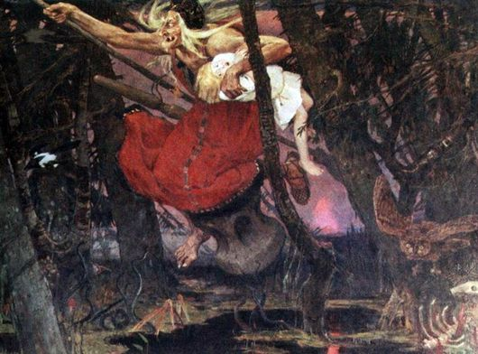

The Hut Turns
Every village had a witch in the woods to frighten the children — and the children were right. Knock twice.

The Hut Turns
Every village had a witch in the woods to frighten the children — and the children were right. Knock twice.
Feature map
Level-by-level features, as the figure refined them.
The Fence of Bones & Knock Twice
The Fence of Bones — Action · 2 CE.
Tier IV · Controller / Caster · Suggested CE ability: WIS · Primary verb: Hunger Your technique save DC = 8 + your proficiency bonus + your WIS modifier. "Your terrain" means any area affected by your technique features. You are never hindered by your own terrain. The hut is a Huge construct-dwelling: AC 15, HP 60, immune to poison and psychic. If destroyed, it collapses into kindling and bone — and rebuilds itself at dusk, because of course it does.
The Fence of Bones — Action · 2 CE. Bone rises from the ground: a 20-ft-radius zone becomes your terrain for 1 minute — difficult terrain for your enemies, and any hostile creature that starts its turn inside takes 1d6 piercing damage (the bones are sharp, and they lean toward the living). Knock Twice (passive). You always know when a creature enters your terrain — you feel the knock. This is not sight or hearing; it cannot be hidden from by invisibility or silence. The hut knows its guests.
The Mortar Flies & Root Grasp
The Mortar Flies — Bonus action · 3 CE.
The Mortar Flies — Bonus action · 3 CE. You climb into the mortar and go: gain a flying speed of 50 ft until the end of your next turn, and you do not provoke opportunity attacks while flying this way. Your trail is swept away — you leave no tracks, and tracking you by non-magical means is impossible for 1 hour. Root Grasp — Action · 3 CE. The forest reaches. Each hostile creature in a 30-ft-radius centered within 60 ft of you must make a STR save or take 2d6 bludgeoning damage and be restrained by roots (half damage on success, not restrained). A restrained creature may repeat the save at the end of each of its turns, freeing itself on a success. The forest is patient. It can wait.
The Hut Turns
Action · 5 CE.
Action · 5 CE. The hut comes. A Huge hut on chicken legs manifests in an unoccupied space within 60 ft and persists for 1 minute: - At the start of each of your turns, you may move the hut up to 30 ft (it strides; it does not provoke opportunity attacks). - Each hostile creature within 10 ft of the hut when it moves must make a DEX save or take 3d6 bludgeoning damage (half on success) — trampled by the chicken legs. - You may enter or exit the hut as a bonus action; while inside, you have total cover. - The hut counts as your terrain in a 10-ft radius around it (bone-fence effects apply). Counterplay, stated plainly: the hut can be destroyed (AC 15, HP 60). Burn it. She will rebuild it by dusk — but a fight is shorter than a day.
Eat the Path & Baba's Test
Eat the Path — Action · 8 CE.
Eat the Path — Action · 8 CE. The forest itself hungers. A 60-ft-radius centered within 120 ft of you becomes primeval for 1 minute: it is difficult terrain and heavily obscured for your enemies only (you and your allies see through it perfectly — the forest shows its friends the paths). Each hostile creature inside must make a WIS save or be frightened of the trees for 1 minute (it sees the bones in the branches). A frightened creature may repeat the save at the end of each of its turns. Baba's Test (passive). Once per round, when a hostile creature fails a saving throw against your technique, you may ask it one question, and it must answer truthfully. (This is not mind control — it is folklore, and folklore is heavier than magic. It grants no further compulsion.)
Maximum, Domain, or equivalent.
Capstone material.
The Wild Takes Back (Maximum)
Action · 10 CE. For 1 minute, a 120-ft-radius centered on you becomes old-growth forest that has never known an axe: - Hostile creatures that start their turn inside take 4d6 bludgeoning damage (DEX save for half) as branches lash. - The area is difficult terrain for hostiles, and any hostile that fails its DEX save is also restrained until the end of its next turn (roots within roots). - Whenever a hostile creature fails a saving throw against your technique inside this forest, you regain 2d8 hit points — the forest feeds its grandmother.
"The Hut Walks at Night"
Full-turn action · 20 CE · Undisclosed. The forest stops pretending to be a forest. A 60-ft-radius domain of bone, root, and hunger manifests — 800 clash points, burnout 5 rounds · duration 2 minutes. The sure-hit is the grasp itself: every hostile creature in the domain is restrained by roots that do not miss (no attack roll; the restraint is the sure-hit). A restrained creature takes 3d6 piercing damage at the start of each of its turns (the bone fence leans in) and may attempt to escape as normal (STR or DEX vs. your technique save DC) at the end of its turns. While the domain stands, your hut may move 60 ft per turn instead of 30, and you regain 1d8 hit points whenever a hostile fails a save inside. The hut walks at night. Pray it walks past you.
- Clash points
- 800
- Burnout
- 5 rounds
- Duration
- 2 minutes
- Radius
- —
- Activation ✦
- full-turn action
- CE cost ✦
- 20
✦ Canon: figure Domains are Specific Domains — the stated profile governs, not the player point-unlock table.
Grandmother of the Woods
Capstone. The forest keeps its own: - While in a forest, you cannot be located by divination or scrying — you are the woods, and the woods are everywhere. - Once per day, if you are reduced to 0 hit points while in a forest, you do not die: you dissolve into the trees and reappear 1 minute later at full hit points at any point within 1 mile of where you fell. This fails only if the forest itself has been destroyed (burned to ash, every root) — and she will remember who burned it.
Build-defining options.
This technique grants Innate Technique Feats — hand-authored applications of the figure's art, available in the builder's feat picker when you select this technique.
Edge cases and shared systems.
Campaign canon notes